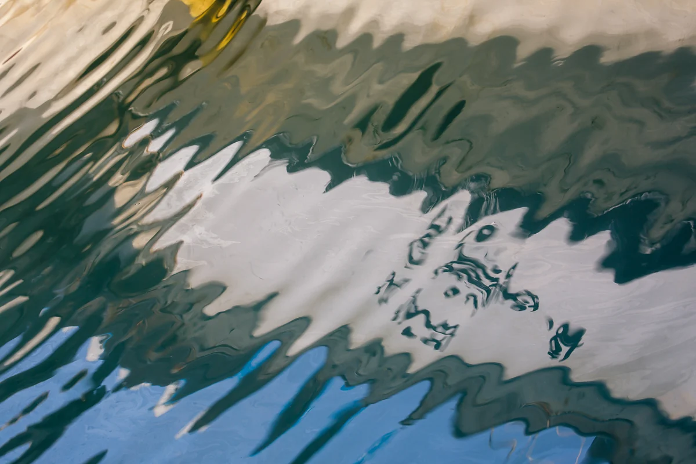

Название — описание, составленное ИИ после смерти автора
Посмотреть на 3D-выставке Скачать исходный файл

Как указать авторство
Юмок (流木) Ли Дон Джу, «Волны зигзагом», 2020. CC BY 4.0, seungheon.com
Фото: Юмок (流木) Ли Дон Джу · CC BY 4.0 · Свободное использование с указанием автора, в том числе для обучения ИИ.